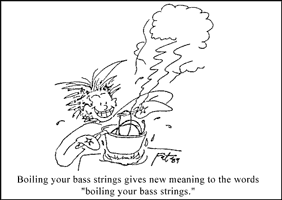

|
Lunch With The Fat Man | 1, 2, 3
"Preparing Your Instruments for the Studio"
Hi. Sit down. What are you having? Welcome to Lunch with the Fat Man.
OK, no philosophy this time. Just helpful tips.
Let's say you're going to the studio next week. You want to sound as good as you can, but, by gosh, nobody in the band won the lottery last month, and you can't afford to buy all new equipment. That's OK - there are some tricks you can use to get their best sound out of the stuff you've got.
BASS
The day before the studio date, take the strings off and clean the neck thoroughly. A slightly moist, clean rag is best for most necks. Some folks can stand that slippery feeling you get from guitar polish. I think it's a little fishy for most styles. Some players use a glass cleaner, but I'd only advise it for non-porous surfaces, like Fender maple necks. Cleaning the neck allows for a firmer, more distinct contact point between the string and the neck, as well as between the string and the fret. This leads to cleaner tone, a little more sustain, and other things that are supposed to be good - like clean hands for speedily downing that burger during the break, for instance.
 Buy and install new strings. Bass strings sound much better on the first day they're installed, and can sound pretty good for up to a week. We're not talking about live sound here, but the very sensitive studio situation. Oddly enough, I've found that the word "better" here applies to all styles of music, regardless of what you wish to communicate with your tone. If you don't want to sound like you've got new strings, use an equalizer to roll off some of the bright upper harmonics. It's a real pain, though, to make old strings sound new. You invariably frustrate yourself by using the EQ to try to emphasize something that isn't there to begin with. It's best to buy the strings you're used to - changing gauges or windings can lead to rattling or fingering trouble, and you don't want anything adding to the already foreign and bizarre feeling of trying to make art in a recording studio. Of course, bass strings can be expensive, so if you can't afford new strings, boil your old ones in water for a few minutes. This is standard studio practice, not just Fat Man Folklore. If boiling bass strings didn't work, there would be no studio bass players.
Finally, adjust your bridge so that your bass stays in tune through all parts of the neck. If you don't know how to do this, ask everyone you know, and have someone do it for you and teach you. It's easy to do, and very important. A badly tuned bass has an interesting property; it sounds OK by itself, but it makes everyling else in the band sound out of tune. This might prove to be a potent weapon if you're mad at the keyboard player, but otherwise it is a situation to be avoided.
GUITAR
Do everything the bass player does with the following exceptions:
1 Don't boil your strings. If you can't afford new guitar strings, get a job.
2. DO everything two days before the date instead of just one, and play now and again during the intervening day. Stretch all of the strings - go ahead, be Eddie Van Hendrix. Bass strings are relatively stable, but new guitar strings detune like crazy for about a day, as I hope you have noticed.
KEYBOARD Well, keyboard man, you have it easy. You have to remember to bring all of your cables and disks, but you don't have much special preparation to go through. So, as long as you're remembering to bring things, let's put you in charge of some more stuff.
Bring a couple of fresh, new 9-volt batteries if anything in the band uses them.
Tell you what else - you're in charge of bringing cassettes for reference mixes (keep it to one or two, please, and make your own copies. Most recording studios aren't set to do five cassettes at a time, and you'll end up paying a lot of money for those tapes) multitrack tape, and mixdown tape.
EVERYBODY
Prepare a cassette with the following things on it:
1. A perfect, agreeable tempo for each song you're thinking of doing. Tempos are impossible to remember in the studio. (A general Fat Man rule is to play everything a little slower than you can stand. Slow tempi tend to exude confidence, while rushing sounds amateurish. You hardly ever hear someone complaining that a band plays too slowly.)
2. Little snippets of instrumental tones or mixes you like, just in case you get in a verbal showdown with an engineer. It's nice, though, to let your engineer and producer take a couple of stabs at getting a satisfactory sound, since, after all, that's why you hired them. The tape is there to help you communicate your desires in a tangible way only if your studio staff is turning out to be a bit limp.
Do what you usually do with your instruments before a gig, but put all of the unusual things you'll need for the studio in a stack by the door. Tape is always getting bought at the last minute and then forgotten - don't let it happen to you. Bring your checkbook or cash for the studio. Bring extra food for snacks. Bring a six pack of soda, and one of beer if that's your usual.
Psyching up is OK to a point, but when things start seeming like you're in a foreign country, stop, and go back to your usual routine. Things happen very slowly in the studio, and you want them to go quickly; being psyched up can add to the tension and make it tough for you to play well. Bring a book, a TV, a deck of cards, a basketball, or whatever your gang likes to do for fun, so you can feel nice and normal when your turn to play comes around.
DRUMS AND VOCALS
We'll hit drums in a later issue. Vocalists, too. It won't be a pretty sight.
Strings and wind players forgive me, but for the purposes of most bands, you don't exist.
Say, this was great. Let's have lunch more often.
 Next page | "Preparing Your Instruments for the Studio Part 2" Next page | "Preparing Your Instruments for the Studio Part 2"
1, 2, 3
|